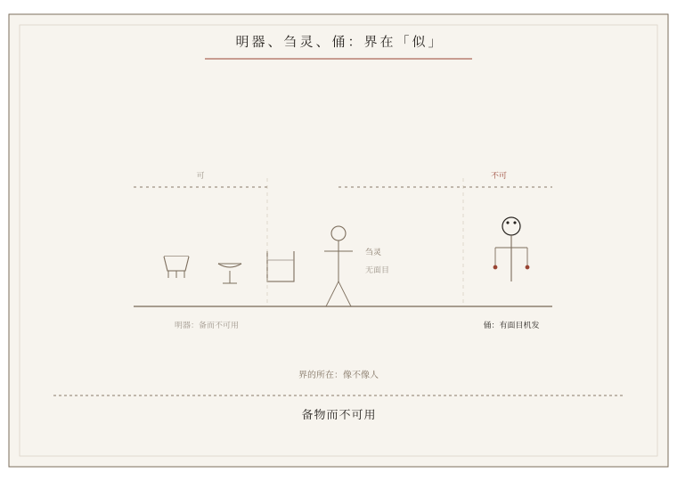

檀弓下 · 四·三十六 · 第 361 课
孔子谓为明器者，知丧道矣，备物而不可用也。哀哉！死者而用生者之器也，不殆于用殉乎哉！其曰明器，神明之也。涂车、刍灵，自古有之，明器之道也。孔子谓为刍灵者善，谓为俑者不仁，殆于用人乎哉！
说什么事：孔子说，做明器的人懂丧之道——物件齐备，却不能用。可哀啊！给死者用生者的器，这不是接近于用人殉吗？称之为「明器」，是因为以神明待之。泥车、茅人自古就有，同是明器之道。孔子说做茅人的好，做俑的不仁——那已近于用真人了。
落在哪一层：以「似」量礼。论丧礼全部的分寸，系于「像到什么程度」。
为何编在此位：上节言朝庙之顺，此节言器物之限。一顺一限，礼之两面俱见。
【经】孔子謂為明器者，知喪道矣，備物而不可用也。哀哉！死者而用生者之器也，不殆於用殉乎哉！其曰明器，神明之也。塗車、芻靈，自古有之，明器之道也。孔子謂為芻靈者善，謂為俑者不仁，殆於用人乎哉！
【注】神與人異道，則不相傷。／殆，幾也。殺人以衛死者曰殉。用其器者，漸幾於用人。／神明，死者異於生人。／芻靈，束茅為人馬。謂之靈者，神之類。／言與明器同。／俑，偶人也。有面目機發，有似於生人。孔子善古而非周。
【疏】孔子谓夏家为明器者，知死丧之道焉。以孝子之事亲不可阙，故备其器物，若似生存；以鬼神异于人，故物不可用。／孔子既论夏家之事，是又言殷代之非，故云：可哀哉！殷之送死者而用生者之祭器，不殆于用生人为殉乎哉！「殆」，近也，谓近于用乎生人为殉。所以近者，以生人食器而供死者，似若用生人而殉死人，故云近也。／既言殷代之事，将言周代用偶人为非礼，故先言明器刍灵，后论偶人之事。／「其曰明器，神明之也」，死者之物，还可用涂车、刍灵，即明器之物一类，自古帝王所制而有之，此则岂不可为用，故云「明器之道」也。／谓古之为刍灵者善，谓周家为俑者不仁，不近于用生人乎哉！言近于用生人。所以近者，谓刻木为人，而自发动，与生人无异，但无性灵智识，故云近。此云「用人」，前言「用殉」，殉是已死之人，形貌不动，与器物相似，故言「用殉」；此云「用人」者，谓用生人入圹，今俑者形貌发动，有类生人，故云「用人」。
明器 送死之器。备其形而不堪实用者。
知丧道 懂得丧事的分寸所在。
备物 物类齐备，如生时所用之目。
不可用 形似而不可施于实用。
殆 几也，近也。
殉 杀人以从死。
神明之 以神明之道待之，不与生人同。
涂车 泥做的车。
刍灵 束茅草为人马。注「谓之灵者，神之类」。
俑 偶人。注「有面目机发，有似于生人」。
不仁 不合于人之道。
孔子说：做明器的人懂得丧之道——件件齐备，却一件也不能用。可哀啊！给死者用活人的器物，这不是快要用活人陪葬了吗？称它作「明器」，就是以神明待他。泥车、茅人自古就有，同是明器之道。孔子说做茅人的好，说做俑的不仁——那已近于用真人了。
此章是一篇极短的器物论，却是全部丧礼的分寸所在。
孔子用三个尺度量器物：备不备、用不用、像不像。
第一条许，第二条禁，第三条最险——因为「像」到什么程度，是没法用条文定的。
第一层 备物而不可用：一个自相矛盾的解法 孝子事亲，不可有缺；鬼神异于人，不可用生人之物。
两难之下，礼给出一个看似荒谬的答案：把东西做齐，但让它不能用。
明器之陶，薄而不坚；明器之竹，不具其用。看是齐的，用是不能的。
此一设计，是礼最精微处：它满足了「备」的形式，同时守住了「异」的界限。
第二层 用生者之器，近于用殉 孔子对殷人的批评最重：「不殆于用殉乎哉！」
器物一旦可用，则死者与生者同用一物；同用一物，则死者与生者同一类；同一类，则下一步就是拿人同去。
故孔子所惧，不是器物，是那一小步一小步往下滑的逻辑。 礼的禁，常禁在「还没到那一步之前」。
第三层 刍灵与俑：界在「似」 刍灵束茅，具形而无面目；俑刻木，有面目，且有机发，能动。
郑注一句断得极准：「有似于生人。」
孔子善刍灵而斥俑，不因材质的贵贱，只因「似」的程度。茅人不像人，故可；木偶像人，故不可。
第四层 殆于用人：为什么「像」是危险的 疏辨「殉」与「用人」之别：殉是已死之人，形貌不动，与器物相似，故曰「用殉」；俑者形貌发动，有类生人，故曰「用人」。
此辨极细，义却极大：「像人」比「死人」更近于「用人」。
因为「像」会替人省去想象，省去想象之后，人便不再分辨。
第五层 今日之用：拟真的界限 今日之术，能把亡者的容貌、声音、语调复现出来，且能应答。
以本文之尺度量之，这不是「明器」，是「俑」——面目具，机发，似生人。
其危险不在技术，在与孔子所惧者同：一旦它「像」到可以替代，人便不再做那个非做不可的告别。
故用与不用，可自择；而须先承认它近于「用人」，不可自欺为「无害的纪念」。
与今日何干 凡以技术复现故人、复现旧事、复现不可返之境者，先问一句：它是备而不用，还是可以替代？答此一句，则分寸自明。
| 左 | 右 |
|---|---|
| 明器 | 备物而不可用 |
| 知丧道 | 知分寸 |
| 生者之器 | 殆于用殉 |
| 神明之 | 不与生人同 |
| 涂车 | 泥车 |
| 刍灵 | 束茅为人马，善 |
| 俑 | 有面目机发，不仁 |
| 殉 | 死人从葬 |
| 用人 | 生人入圹 |
画三组器物并置于一条横线上，视点平视。左组为四件陶器：一鼎、一豆、一壶、一盘，形制齐整而壁薄口脆，器身留一圈未修整的泥痕。中组为一束茅草扎成的人形与马形，只具大体轮廓，无面目。右组为一具木偶，具头、躯、双臂，面上刻出眼、鼻、口，双臂有可动之关节，以一短杆支撑。三组之间各留空隙，不画连线。赭色只用在右组木偶的关节处。
